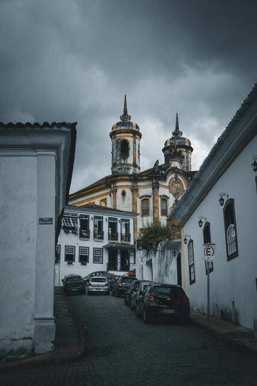

Minas Gerais, um grande estado continental no sudeste do Brasil, é conhecido por cidades da era colonial que remetem à corrida do ouro no país no século 18. Entre elas estão São João del Rei, Tiradentes e Ouro Preto, a antiga capital, todas com ruas de paralelepípedo, mansões ornamentadas e igrejas barrocas decoradas pelo escultor Aleijadinho.O famoso trem a vapor Maria Fumaça liga Tiradentes a São João del Rei.
Curiosidades da Cidade
